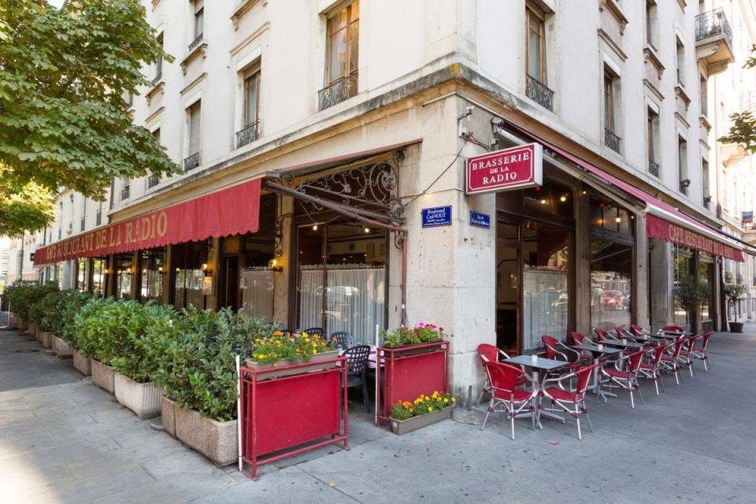
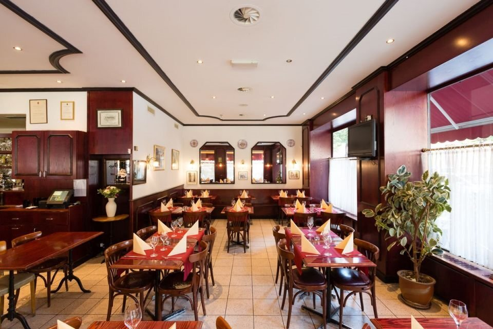
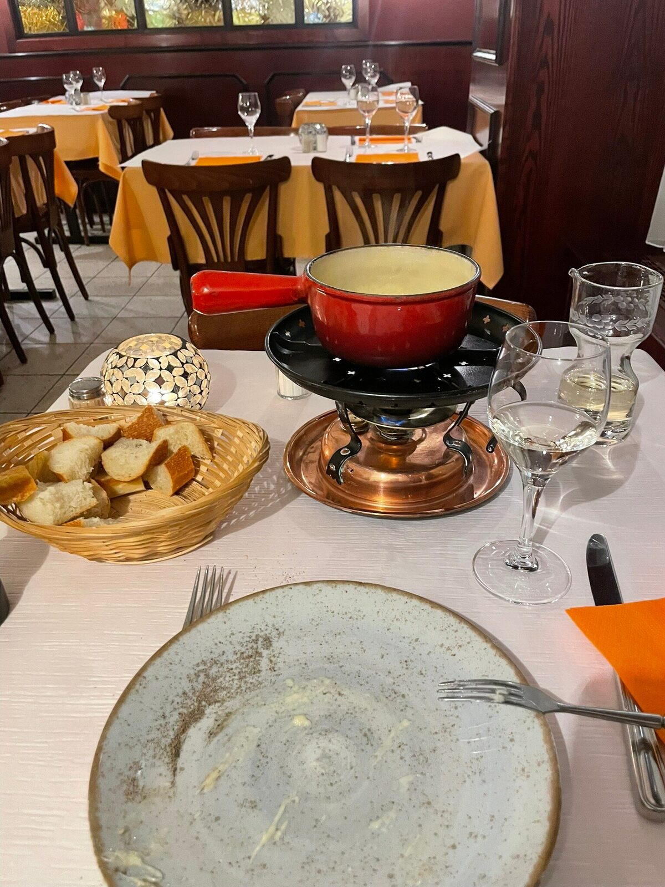
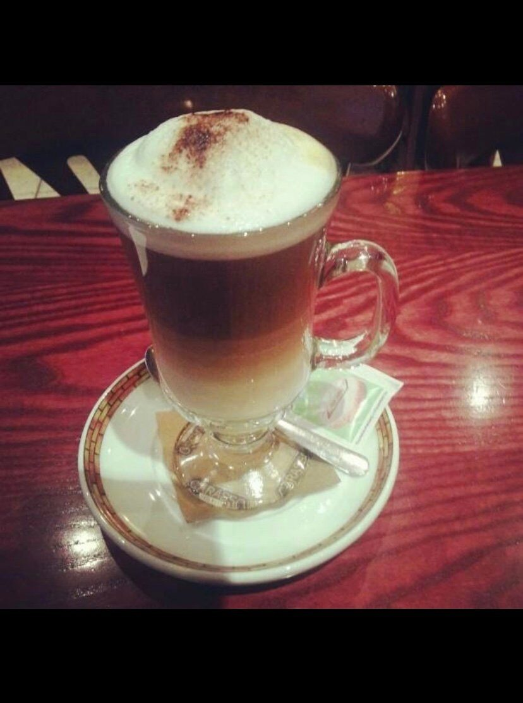
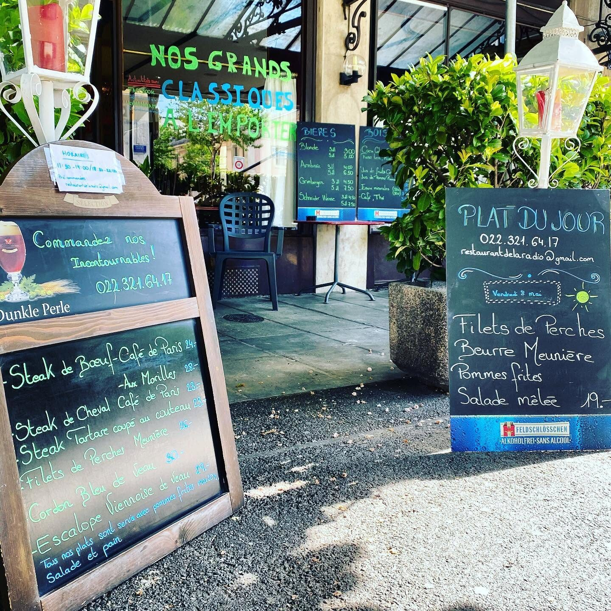
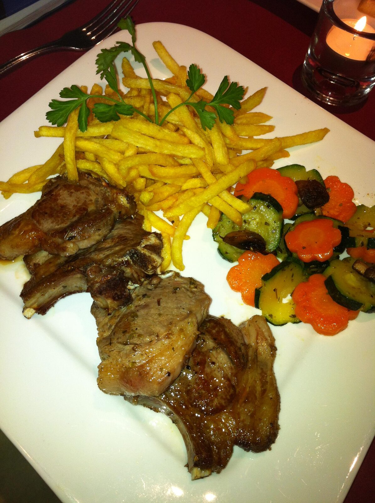
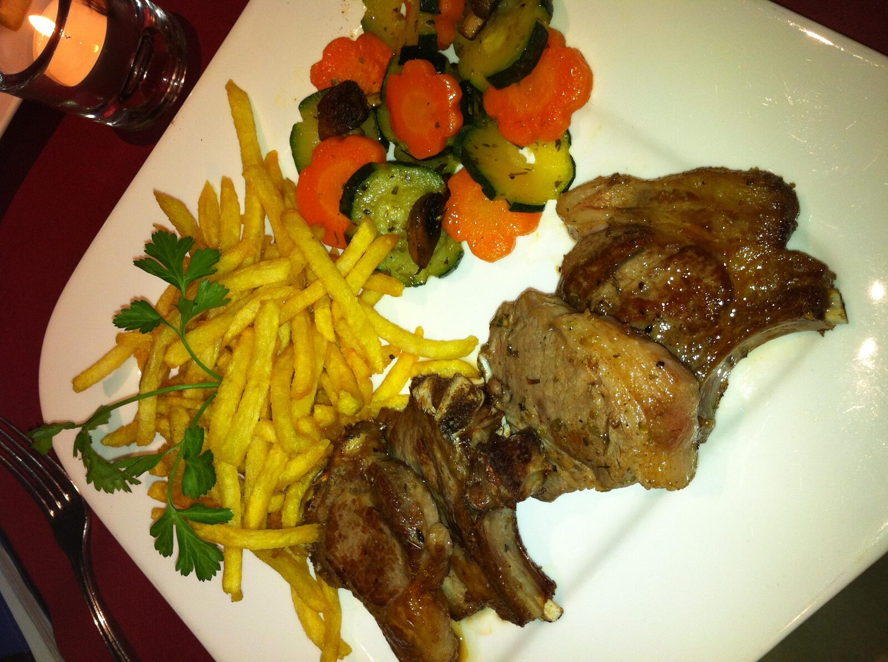
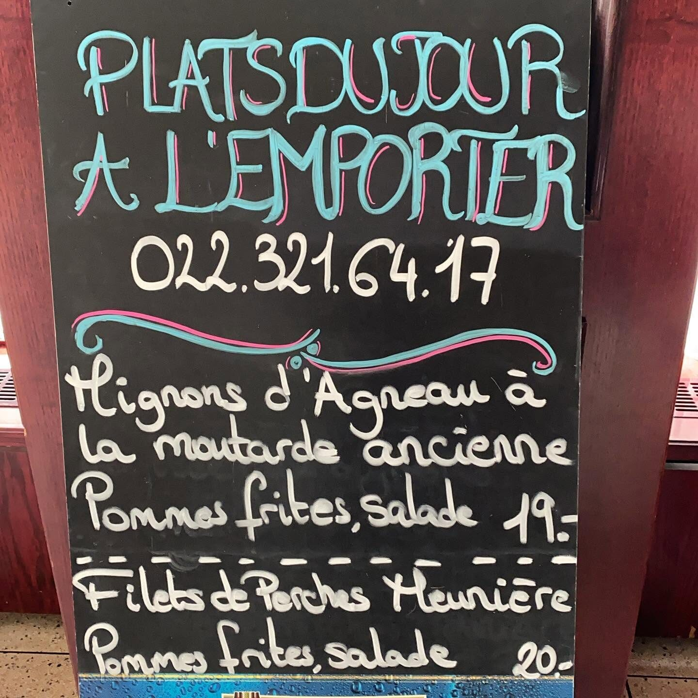
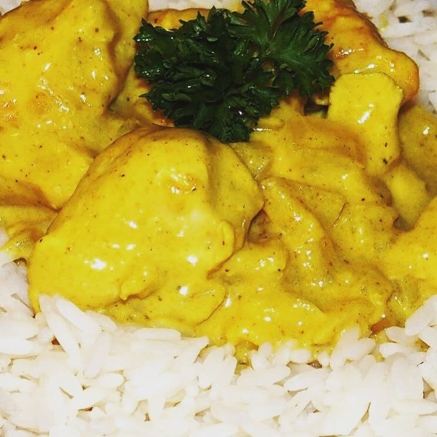
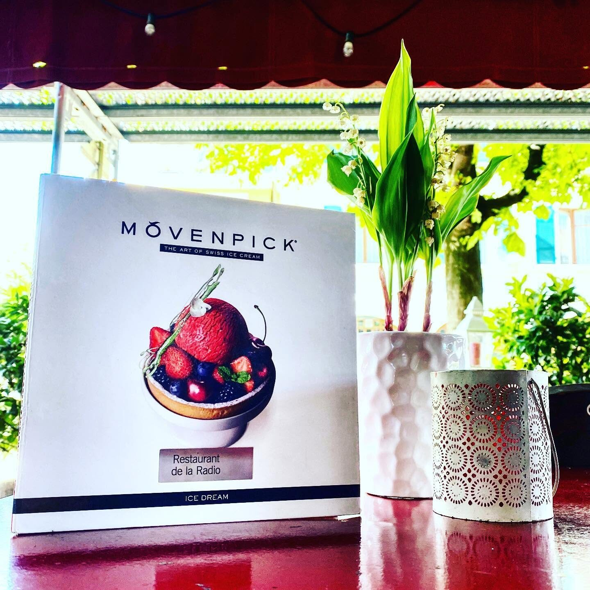

Brasserie familiale · Les Savoises, Genève · depuis 34 ans
Les classiques d'une maison
qui n'a jamais changé.
Tartare coupé au couteau, steak café de Paris et fondues à partager — à table ou en terrasse, à l'angle du boulevard Carl-Vogt.

La carte
Les grands classiques, à l'emporter comme en salle.
La même carte depuis toujours : des pièces généreuses, une fondue à partager, et tout ce qu'il faut pour un bon repas de brasserie.
La maison
Une maison de famille, depuis 34 ans.
À l'angle du boulevard Carl-Vogt, aux Savoises, la même famille tient la Radio depuis plus de 34 ans.
Son enseigne — un poste de radio et une platine, dessinés à la main — donne le ton : une maison à l'ancienne, sans chichi, où l'on vient comme on revient chez soi.
En salle, boiseries sombres et nappes rouges ; en terrasse, à l'ombre des auvents, la table déborde sur le trottoir aux beaux jours. Tartare coupé au couteau, steak café de Paris, fondue à partager : la cuisine ne cherche pas à surprendre, elle cherche à bien faire, tous les jours.
Le 1er mai, un brin de muguet accompagne le dessert — une petite attention, comme on en offre en famille.
- Terrasse
- Cartes acceptées
- À emporter
- Livraison Uber Eats









Nous trouver
Au 73, boulevard Carl-Vogt.
1205 Genève · Les Savoises
- Lundi10h45–15h15 · 17h00–00h00
- Mardi10h45–15h15 · 17h00–00h00
- Mercredi10h45–15h15 · 17h00–00h00
- Jeudi10h45–15h15 · 17h00–00h00
- Vendredi10h45–15h15 · 17h00–02h00
- Samedi10h00–15h00 · 17h00–02h00
- DimancheFermé
- Accès fauteuil roulant
- Parking à proximité (~150 m)
Contact
Une question ? Écrivez-nous.
Pour une question, une commande spéciale ou juste un mot gentil — appelez-nous ou laissez-nous un message. Pour les plats à l'emporter, un coup de fil suffit.